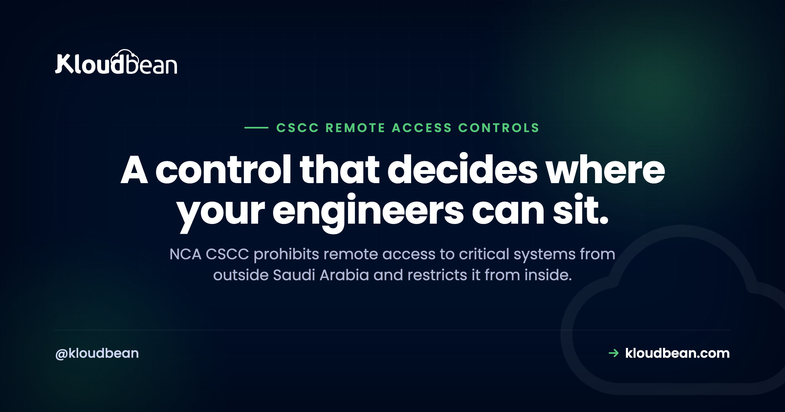

CSCC Remote Access: No Access From Outside the Kingdom, and What That Means

Among the CSCC controls, this is the one with the most direct effect on how a team is organised. Control 2-2-1-1 prohibits remote access to critical systems from outside the Kingdom of Saudi Arabia. Not discouraged, not risk-assessed, prohibited. Access from inside the Kingdom is permitted but restricted, verified, and continuously monitored. If you have an offshore development partner, a contractor abroad, or an engineer who travels, this control reaches into your operating model as much as your network. Here is what it requires and how the access path is normally built.
No. Control 2-2-1-1 prohibits remote access to critical systems from outside the Kingdom. Control 2-2-1-2 allows access from inside the Kingdom but requires it to be restricted, with each access attempt verified by the organisation's security operations centre and remote access activity continuously monitored. Multi-factor authentication is required for all users (2-2-1-3) and for privileged users on the systems used to manage critical systems (2-2-1-4). Mobile device access is prohibited except temporarily, after a risk assessment and approval (2-5-1-1).
The controls in this group
| Control | Requirement |
|---|---|
| 2-2-1-1 | Prohibit remote access from outside the Kingdom of Saudi Arabia |
| 2-2-1-2 | Restrict remote access from inside the Kingdom, verify each attempt via the SOC, continuously monitor activity |
| 2-2-1-3 | Multi-factor authentication for all users |
| 2-2-1-4 | MFA for privileged users and on systems used to manage critical systems |
| 2-3-1-4 | Isolated management network workstations for highly privileged accounts |
| 2-3-1-5 | Encrypt non-console administrative access traffic |
| 2-4-1-4 | Prohibit critical systems from connecting to a wireless network |
| 2-5-1-1 | Prohibit mobile device access, except temporarily with risk assessment and approval |
| 2-5-1-2 | Full disk encryption on mobile devices with access to critical systems |
| 2-2-2 | Review user identities and access rights at least every three months |
Geographic prohibition is an architecture problem, not a policy one
The distinction matters. A policy saying "do not connect from abroad" satisfies nobody, because the question at review time is whether it is possible. Enforcement usually combines several layers rather than relying on one:
- No public administrative surface. Direct SSH, RDP, and database ports are not reachable from the internet at all. This is the strongest layer, because it removes the route rather than filtering it.
- A single controlled entry point. All remote access arrives through VPN, so there is exactly one door to reason about and log.
- Restriction at the entry point. The VPN itself restricts where connections may originate, which is where the geographic requirement is actually enforced.
- Identity-layer conditions. Access policies on the identity provider as a second gate, so a stolen VPN credential alone is not sufficient.
That four-layer shape is what gets built on a managed enterprise engagement with Kloudbean, on a dedicated cloud account: VPN as the only route in, direct SSH from the internet blocked, and the administrative surface simply absent rather than firewalled. Worth being clear that this is enterprise architecture work, not a toggle on a standard plan. A self-serve database uses IP allow-listing, which is a real control but a different one.
Two honest notes on the mechanics. Location enforcement based on network origin is not flawless, since a determined person can route traffic through an in-Kingdom relay. That is why the identity layer and monitoring matter, and why 2-2-1-2 asks for verification of each access attempt rather than a one-time configuration. Second, be careful with any always-on split tunnelling or third-party remote support tool that could create a second path in. Those are the routes people forget when documenting the control.
The bastion pattern
Once VPN is the only door, the standard next layer is a bastion, sometimes called a jump server. Rather than letting an authenticated engineer reach every machine, they land on one hardened host and move on from there. It concentrates the audit trail, reduces the number of machines exposed to any credential, and gives you a single place to record sessions.
Layer 2-3-1-4 on top of that and the picture is complete. Highly privileged accounts should work from specific workstations on an isolated management network, separated from other networks and services including email and the internet. The reasoning is straightforward: the most common route to a privileged credential is a phishing link opened on the same machine that holds it, so the control removes the ability to do both from one device.
Two pieces of that live in different places, which is why teams half-build it. The bastion, the private networking behind it, and the session logging are infrastructure a provider can stand up and keep patched, and Kloudbean does exactly that on enterprise engagements. The isolated management workstation in 2-3-1-4 is your endpoint estate. Nobody hosting your servers can hand you a laptop that doesn't read email.
The SOC verification requirement
Control 2-2-1-2 contains a phrase that is easy to skim: each access attempt verified by the organisation's security operations centre, with continuous monitoring of remote access activity. That is not a firewall rule. It presumes an operational function watching access in real time.
The infrastructure side can be prepared: every VPN and bastion session logged with identity, source, timestamp, and duration; alerts on unusual patterns such as access outside normal hours, a new source, or repeated failures; and session records held in immutable storage under the retention rules in 2-11-2. Verification itself is a human activity though, and it needs a team and a rota. This is the same boundary that appears in 2-11-1-4, and it is worth planning for early rather than discovering during a review. Kloudbean takes on SOC and SIEM work as a collaborative engagement scoped with the client rather than a fixed package, precisely because the right shape depends on your hours, team, and escalation paths.
Mobile devices and wireless
Two restrictions people rarely expect. Control 2-5-1-1 prohibits access to critical systems from mobile devices, allowing it only for a temporary period, after assessing the risks and obtaining approval from the organisation's cybersecurity function. If a device does get that approval, 2-5-1-2 requires full disk encryption on it. Read together: mobile access is an exception with paperwork, not a convenience.
Separately, control 2-4-1-4 prohibits critical systems from connecting to a wireless network at all. That is about the systems themselves rather than the user's laptop, and it constrains how the environment is built.
The offshore team problem
This is the part worth raising with stakeholders before it becomes a surprise. If a system is identified as critical, engineers outside the Kingdom cannot remotely access it. Combined with control 4-1-1-2, which requires outsourcing and managed services for critical systems to rely on Saudi companies, and 1-5-1-2 on staffing for technical support and development roles, the framework has clear expectations about where the people are, not only where the servers are.
Practical consequences to plan for: an offshore team can usually still develop, since development happens against non-production environments, but they cannot reach production. Anything requiring production access, deployment approval, incident response, or database administration needs to sit with people who can lawfully connect. Emergency access paths need designing up front, because an incident at 2am is the worst time to discover the only person who can reach the system is in another country. And your development workflow needs to work without production data, which is where 2-6-1-1 on masking becomes a practical requirement rather than a compliance line.
How to evidence it
Have ready: the network configuration showing no public administrative ports, the VPN configuration including its origin restrictions, MFA coverage reports for both ordinary and privileged accounts, bastion session logs, the management network separation, the mobile access approvals with their risk assessments, and dated access reviews from the last three months under 2-2-2. As with the rest of CSCC, the goal is to answer with configuration and records rather than with a policy document.
On a managed engagement the infrastructure half of that pack arrives as managed reports, because Kloudbean administers the cloud access on your behalf and raw console access isn't handed over. That's a deliberate trade: it's what keeps the privileged-access story clean, and it means you ask us for evidence rather than exporting it yourself.

Why every control in this group sits below the user
Read the ten controls again and notice where each one is enforced. Not one of them relies on the person behaving correctly. No public administrative ports, so there's nothing to connect to. One VPN door, so there's one place to restrict origin. MFA, so a password alone is inert. A bastion, so a credential reaches one host instead of forty. An isolated management workstation, so the machine holding privileged access can't open a phishing link. Full disk encryption on any approved mobile device, so losing it isn't a breach of the system.
That pattern is the design lesson, and it's the reason this group is worth building before the easier-looking ones. Controls placed below the user survive human error. Controls placed above it, in a policy stating what people should not do, produce a document at audit time and nothing at incident time. If you take one thing into your architecture review, take that: for every line in this subdomain, ask where it's enforced, and if the answer is "in the handbook", it isn't done.
Where the line falls in practice. Kloudbean builds and runs the enforcement layer on managed enterprise engagements with a dedicated cloud account: VPN-only remote access with direct SSH from the internet blocked, a dedicated bastion for privileged administrative work, MFA on console and VPN, encrypted administrative traffic, least-privilege roles reviewed quarterly, private networking for the database tier, and session logs feeding the immutable store.
Three things in this group no host fixes, ours included. Where your engineers physically sit, which is an operating-model decision that 2-2-1-1 and 4-1-1-2 make for you. Who is authorised, and the rota that verifies each access attempt under 2-2-1-2, which needs staffed hours whether that's your team, an MSSP, or a SOC engagement scoped with us. And the mobile approvals with their risk assessments, which are your cybersecurity function's signature, not a configuration. Infrastructure alignment is what a provider delivers. Certification is assessed against your organisation.
Still stuck?
For the framework overview see NCA CSCC explained, and for the gap list the critical systems hosting checklist. The database side of access control is in CSCC 2-2-1-8, and session logging in CSCC 18-month log retention. On the networking concepts, what is a VPC, and for residency data residency in Saudi Arabia.
Build the infrastructure half properly.
On managed enterprise engagements Kloudbean builds and maintains the infrastructure controls, with evidence delivered as managed reports and in-Kingdom hosting available. The policy, staffing, and application-layer work remains yours, which is the honest boundary.
- ✓ In-Kingdom (Dammam) available
- ✓ Centralised logging
- ✓ Immutable log storage
- ✓ Private database access
- ✓ MFA and least privilege
- ✓ Automatic backups
- ✓ Evidence as managed reports
FAQ
Can I access a Saudi critical system from outside the Kingdom?
No. Control 2-2-1-1 prohibits remote access to critical systems from outside the Kingdom of Saudi Arabia. Access from inside the Kingdom is permitted under 2-2-1-2 but must be restricted, with each attempt verified by the security operations centre and activity continuously monitored.
How do I technically enforce the geographic restriction?
Layer it. Remove public administrative surface so SSH, RDP, and database ports are unreachable from the internet, make VPN the single entry point, restrict permitted origins at the VPN, and add identity-provider access conditions as a second gate. Network-origin checks are not flawless on their own, which is why the identity layer and continuous monitoring matter.
What is a bastion host and does CSCC require one?
A bastion, or jump server, is a single hardened host that administrators land on before reaching other machines. CSCC does not use the word, but it is the standard way to satisfy the surrounding requirements: restricted and monitored access under 2-2-1-2, encrypted non-console administrative traffic under 2-3-1-5, and a concentrated audit trail. Control 2-3-1-4 separately requires privileged accounts to work from an isolated management network.
Can our offshore development team work on a critical system?
They can generally develop against non-production environments, but they cannot remotely access the critical system itself, because 2-2-1-1 prohibits access from outside the Kingdom. Production access, deployment approval, incident response, and database administration need people who can lawfully connect. Control 4-1-1-2 also requires outsourcing and managed services for critical systems to rely on Saudi companies.
Does CSCC allow access from mobile devices?
Only as an exception. Control 2-5-1-1 prohibits access to critical systems from mobile devices except for a temporary period, after assessing the risks and obtaining approval from the organisation's cybersecurity function. Where access is granted, 2-5-1-2 requires full disk encryption on the device. Separately, 2-4-1-4 prohibits critical systems from connecting to a wireless network.
How often must remote access rights be reviewed?
At least every three months. Control 2-2-2 requires user identities and access rights to critical systems to be reviewed on that cadence. Keep dated records of each review, because this is one of the recurring obligations that most often lapses between audits.